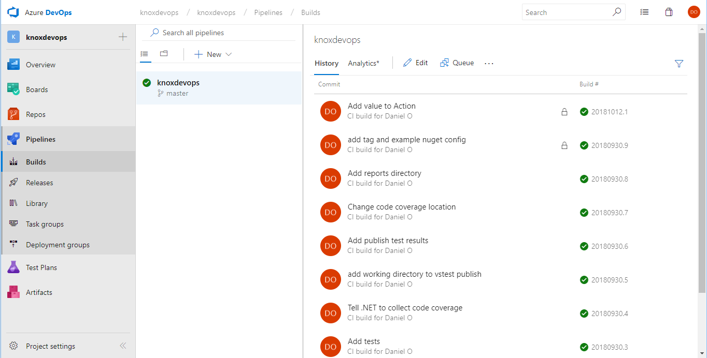

Building
Deploying
Monitoring
Applications
with Azure
Have you ever met someone very confident in their release process?
Someone so confident in their release process they deploy on Fridays?

Have you ever met someone with a manual release process?
This might be their attitude.
To reach sanity:
- Consistent builds
- Consistent deployments
- Monitor applications
Azure DevOps is the starting point.
https://dev.azure.com/knoxdevops/knoxdevops

I can store repos here, or GitHub, or Bitbucket, or wherever.

The language doesn't matter. I also have a PHP example here.
https://dev.azure.com/knoxdevops/php_sample
Consistent builds
Tip 1: Build on code commit!
Consistent builds
Tip 2: Keep your build definition in your repository.

pool:
vmImage: 'Ubuntu 16.04'
variables:
buildConfiguration: 'Release'
steps:
- script: |
dotnet build ./src/KnoxDevOps.Core/ --configuration $(buildConfiguration)
dotnet build ./src/KnoxDevOps.API/ --configuration $(buildConfiguration)
dotnet test ./src/KnoxDevOps.Tests/ --configuration $(buildConfiguration) --logger trx --collect "Code coverage"
dotnet test ./src/KnoxDevOps.Tests/ --configuration $(buildConfiguration) /p:CollectCoverage=true /p:CoverletOutputFormat=cobertura /p:CoverletOutput=$(System.DefaultWorkingDirectory)/TestResults/Coverage/
cd ./src/KnoxDevOps.Tests/
dotnet reportgenerator "-reports:$(System.DefaultWorkingDirectory)/TestResults/Coverage/coverage.cobertura.xml" "-targetdir:$(System.DefaultWorkingDirectory)/TestResults/Coverage/Reports" "-reportTypes:htmlInline" "-tag:$(Build.BuildNumber)"
cd ../../
dotnet publish ./src/KnoxDevOps.API/ --configuration $(buildConfiguration) --output $BUILD_ARTIFACTSTAGINGDIRECTORY
- task: PublishTestResults@2
inputs:
testRunner: VSTest
testResultsFiles: '$(System.DefaultWorkingDirectory)/**/*.trx'
- task: PublishCodeCoverageResults@1
inputs:
codeCoverageTool: cobertura
summaryFileLocation: $(System.DefaultWorkingDirectory)/TestResults/Coverage/**/*.xml
reportDirectory: $(System.DefaultWorkingDirectory)/TestResults/Coverage/Reports
- task: PublishBuildArtifacts@1Daniel Oliver
Microsoft MVP
Website: olivercoding.com
Twitter: @a_software_dev
Github: danieloliver
Slides: https://azure-app-talk.olivercoding.com/